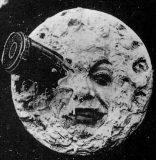
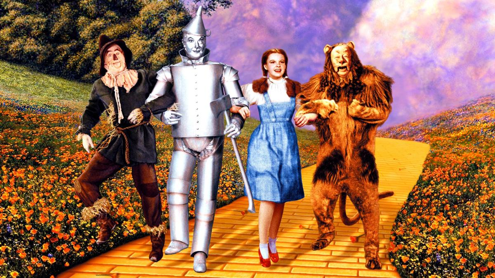
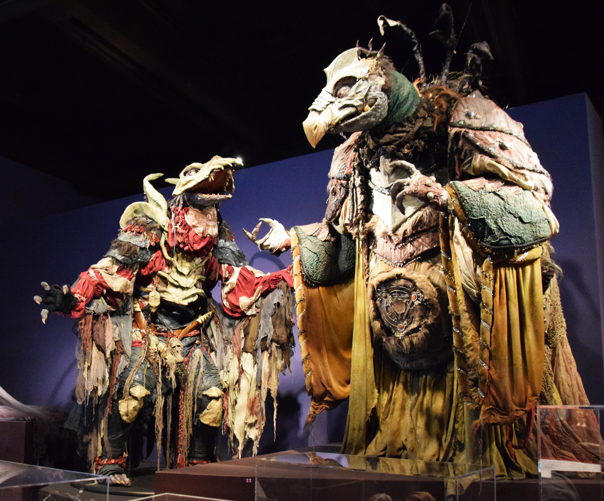
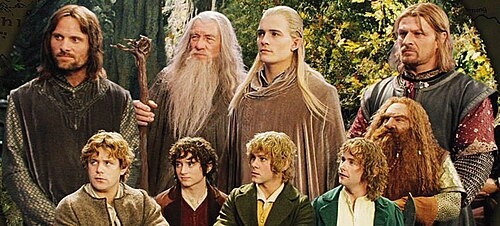

Core elements of fantasy films
- Magic and the Supernatural
- An active presence of spells, enchanted objects, or supernatural forces that shape the plot.
- Imaginative Worldbuilding
- Settings that range from entirely fictional secondary worlds (like The Lord of the Rings) to hidden or magical layers integrated into our real world (like Harry Potter).
- Mythical Beings and Folklore
- Characters such as elves, dragons, wizards, talking animals, or gods drawn from global mythology and folklore.
- The Hero’s Journey
- Traditional narrative structures featuring quests, prophecies, mentors, and an overarching struggle between good and evil.
- Escapism and Wonder
- E A focus on the extraordinary and marvelous rather than scientific explanations (which separates it from science fiction).
The Silent Era & Early Visual Illusions

Fantasy cinema was born alongside the medium of motion pictures itself at the turn of the 20th century. During film’s earliest days, visionary directors realized that the camera was not merely a tool to capture reality, but a magical device capable of constructing impossible worlds. French illusionist-turned-filmmaker Georges Méliès led this revolution with his groundbreaking 1902 work, A Trip to the Moon. Méliès pioneered techniques including double exposure, time-lapse photography, hand-tinted color, and stop-trick edits, which allowed actors to vanish or transform instantly on screen. These early silent experiments established the foundational rule of fantasy cinema: using theatrical creativity and camera tricks to visually manifest the supernatural. Rather than relying on realistic physics, early silent fantasy embraced theatrical spectacle, folklore, and dreamlike logic, laying down the visual building blocks and storytelling techniques that would inspire generations of special effects artists and fantasy directors to come.
Technicolor and Stop-Motion Magic

The 1930s through the 1960s brought transformative visual innovations that reshaped how audiences experienced fantasy on screen. The introduction of three-strip Technicolor in 1939’s The Wizard of Oz demonstrated how color could define narrative, using bright, otherworldly tones to visually separate magical lands from mundane reality. As the genre expanded into mythic epics, legendary special effects artist Ray Harryhausen revolutionized creature design through his signature "Dynamation" stop-motion animation process. In films like Jason and the Argonauts (1963), Harryhausen meticulously combined live-action actors with miniature frame-by-frame puppets, bringing skeleton armies, hydras, and giant statues to life. This era proved that fantasy films could capture complex mythological adventures and legendary monsters without modern digital technology. The combination of vivid color palettes, hand-crafted sets, and painstaking frame-by-frame creature animation gave mid-century fantasy a tactile, heroic quality that forever cemented mythic beasts into the public consciousness.
Puppetry, Animatronics, and Dark Fantasy

Before the advent of computer graphics, the 1970s and 1980s marked a golden age of practical filmmaking, physical world-building, and darker narrative themes. Directors moved away from bright, fairy-tale tropes to explore mysterious, immersive secondary worlds filled with tangible creatures. Master puppeteers and creature designers like Jim Henson pushed the boundaries of physical performance using intricate animatronics, life-sized puppets, prosthetic makeup, and scale miniatures. Movies such as The Dark Crystal (1982) and Labyrinth (1986) featured entire casts of non-human characters brought to life entirely through physical puppetry and practical set craft. These films created believable, weathered, and occasionally eerie environments that felt completely real because actors could interact directly with physical props and creatures on set. This period demonstrated that fantasy could appeal to mature audiences through atmospheric world-building, rich mythology, and tactile practical effects, leaving an enduring legacy of creative craftsmanship.
CGI and Modern High-Fantasy Epics

At the turn of the 21st century, advancements in computer-generated imagery (CGI) transformed fantasy into the dominant blockbuster genre in Hollywood history. The release of Peter Jackson’s The Lord of the Rings: The Fellowship of the Ring in 2001 and the launch of the Harry Potter series proved that modern technology could finally adapt massive, complex literary universes for the big screen. Digital effects allowed filmmakers to build sweeping battle scenes containing tens of thousands of computer-generated soldiers, render lifelike dragons, and craft fully digital characters through revolutionary motion-capture performance technology, such as Andy Serkis’s Gollum. Modern fantasy seamlessly blends digital environments with real-world locations, granting filmmakers total visual freedom to realize complex magic systems and grand mythical landscapes. Today, CGI-driven high fantasy dominates box offices worldwide, translating deep folklore and massive imaginary realms into immersive cinematic experiences for global audiences.